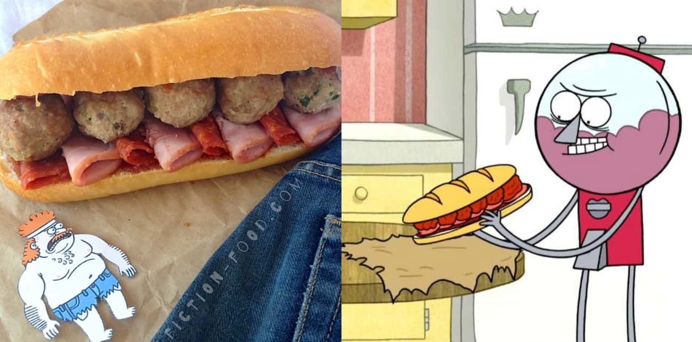

Sandwich of Death From Regular Show
Description
The Sandwich of Death, as featured on Regular Show, is no ordinary meatball sub. But you won't kick the bucket when you bite in, even though the taste is to die for. This recipe comes courtesy of Fiction-Food Cafe.
Ingredients
- 1 cup spaghetti or pizza sauce
- 1/2 cup BBQ sauce
- Split-top sub rolls, cut lengthwise
- Package of sliced sandwich pepperoni
- Package of small sliced Canadian bacon
- Meatballs:
- 1 pound ground beef
- 1 pound ground turkey
- 4 oz. chopped prosciutto
- 1 egg
- 1/4 cup shredded parmesan
- 2 tablespoons plain breadcrumbs
- 1 tablespoon fresh Italian parsley, chopped
- 1/4 teaspoon salt
- Pinch of ground black pepper
Instructions
Stir together the flour, sugar, baking powder, and baking soda in a mixing bowl. In a separate bowl, whisk the melted butter and buttermilk together, then add the egg. Combine the flour mixture with the buttermilk mixture and whisk until they're combined and free of lumps.
Melt some additional butter on a large skillet, and add bacon strips with space between each. Pour the batter down each bacon strip until it is covered. Make sure to leave space between each cake!
Cook until the batter bubbles, then flip. Serve the pancakes drizzled with maple syrup.